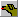
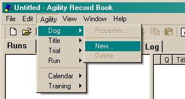
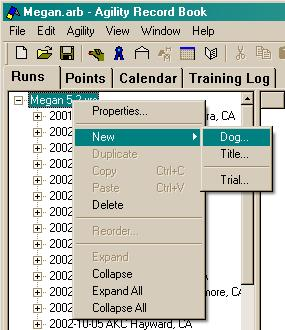

When you open Agility Record Book for the first time, it may be a little unclear what you can do. When looking at the Runs tab, the first thing you must do is create a dog. Almost all actions that you do in the program are based on what is currently selected. So, we must create something!
The easiest way to create a dog is to use the toolbar button . Simply click it with the mouse. Alternatively, you can use the "New" menu located under "Agility".

Once a dog is created, you can right-click on an item in the tree and select the menu "New->Dog".
